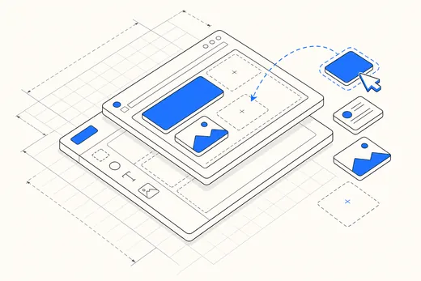

Webflow, Bubble and Framer are not interchangeable. Picking wrong costs a rebuild six months in, so we start every engagement with the matrix below rather than with a preference.

FIG. 01 — platform module diagram
Click a column header to see the recommendation for that platform.
| Criterion | Webflow | Bubble | Framer |
|---|
Roughly one brief in four. No-code is genuinely faster until it is not, and the crossover is predictable.
| Signal | Recommendation |
|---|---|
| >50k database rows | Code. Bubble query times degrade. |
| Complex permissions | Code. Role logic gets unmanageable. |
| Offline / mobile-native | Code. Wrong tool entirely. |
| Marketing site + CMS | Webflow. Nothing beats it here. |
| Validate an idea in 2 weeks | Bubble or Framer. Speed wins. |
Ownership transfers on final payment. We are removed from the workspace at handover unless you retain us.